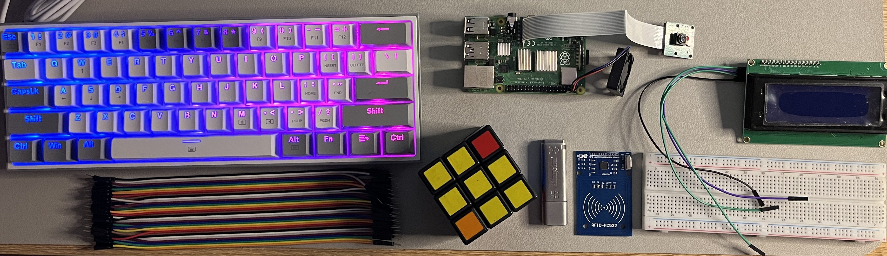

I am passionate about computers and programming. My journey began when I developed a love for video games at the age of 11. Video games have always made me happy. A couple of years later, when I turned 13, my uncle gifted me a PlayStation 2 for my birthday. It was an incredible console, and I fell in love with it. However, I encountered a challenge: purchasing video games was difficult at that age. This led me to research how to get games on my PlayStation 2 without using physical discs. I was amazed by the information I found and learned a lot during this process. The PlayStation 2 is essentially a computer in its own right. I got hands-on experience by installing homebrew software, enabling me to load games from a USB drive as ISO images. This learning curve was fascinating, and I gained knowledge about ISO images, formatting USB drives to FAT32, directories, and flashing ISO images onto empty discs. This experience significantly kindled my interest in computers. In grade 11, I was introduced to BASIC in my science class. It was an enjoyable class, and I appreciated every part of it. As I progressed, I learned about Logic and truth tables, which made things clearer. After high school, I picked up C as my first programming language. Learning C was a fun and great experience that helped me build a strong foundation in programming.
Then , I started messing around with different technologies , trying to learn new things everyday I got my hands on raspberry pi kit, and I try to mess around trying to build projects and have fun, It was really worth it. Moreso, I'm a big fan of Linux, been using close to 2 yrs. Debian has been my favourite distro. With that been said, using Linux, made me learn alot, breaking things and trying to fix them lol, setting up config files and getting familar with the Terminal and other commands. Perharps, I used some flavours like Kali, Parrot, Fedora,Gentoo,Pop Os, Ubuntu, Arch. after gallivantng around, I chose to use debian as my permanent OS lol. 